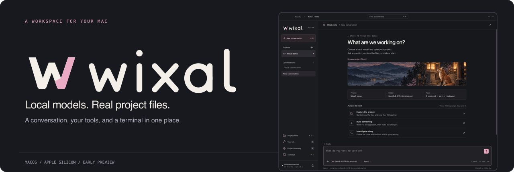
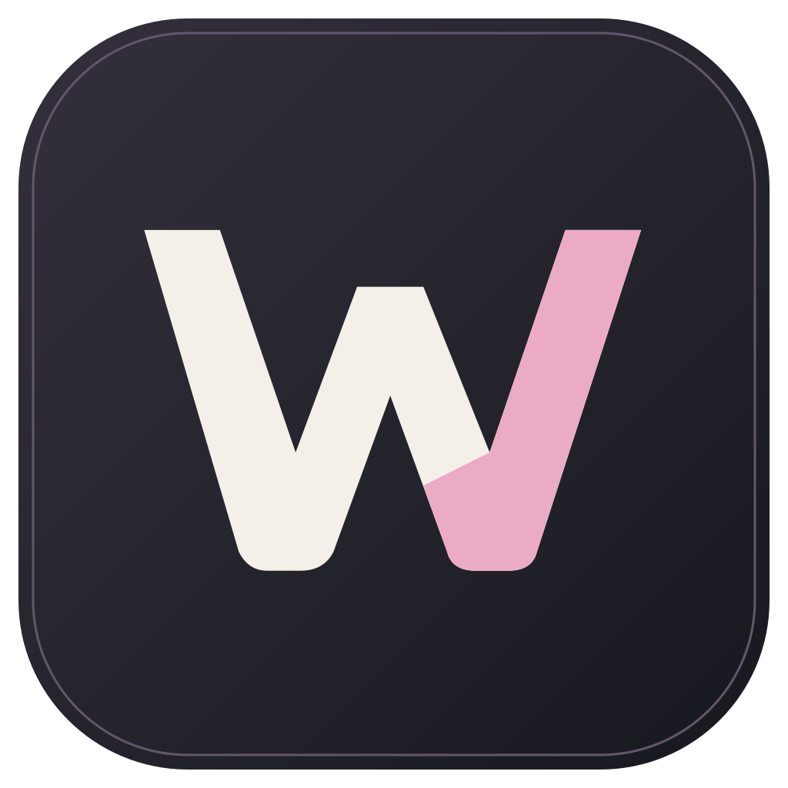
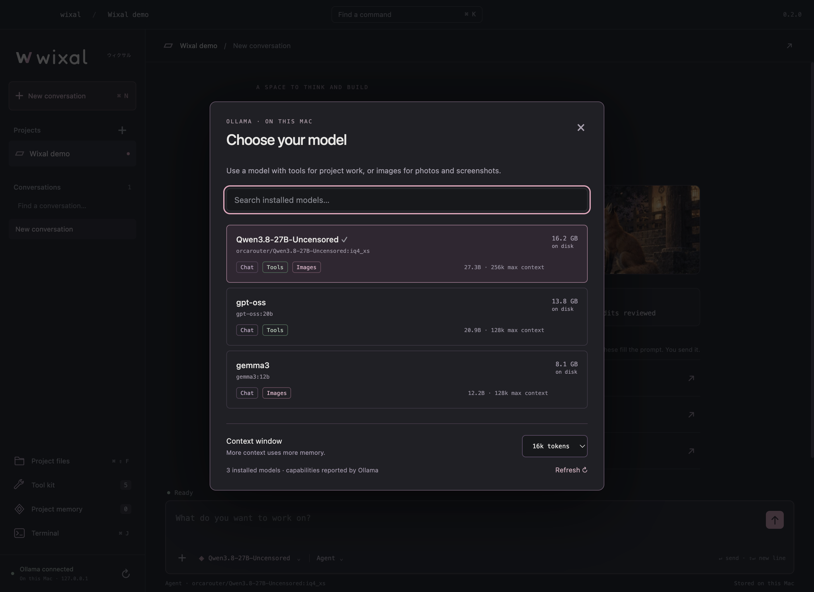
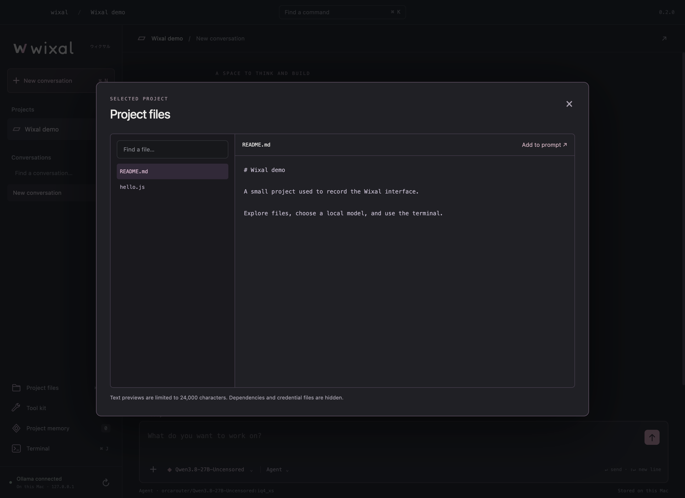
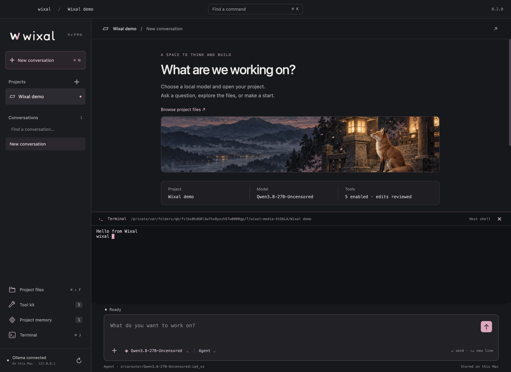

WIXAL / LOGO AND MOTION

Primary logo


For light backgrounds


From the page to the Dock

The same folded W symbol at different sizes.


The logo in motion
The symbol settles into place, its coloured fold appears, and the letters follow.


Wixal in use
Captured from the running app with a temporary demo project. These clips do not simulate model answers.
Choose a model

Open the picker, filter the library, and select Qwen.
Work with a file

Preview the README and code, then add a file to the prompt.
Use the terminal

The terminal runs a JavaScript file and returns its actual output.